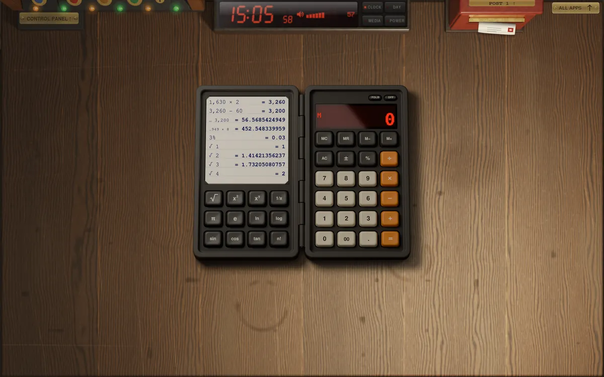
A calculator.
It comes out of the drawer and opens like a pocket book. Its deep keys go down under the mouse or the keyboard, and the lid keeps a pad of what you worked out. 0.1 + 0.2 is 0.3.
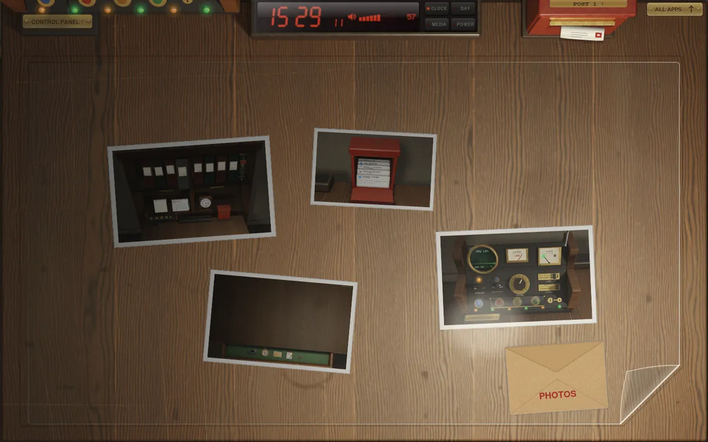
Things to work with, a desk of your own, and room for your hands.
Free and open source under the MIT License. Version 0.2 (beta) for Debian, Ubuntu, Arch Linux and Fedora.
New things
Some tools are better as things. They lie on the desk among your papers, and work the way they look.

It comes out of the drawer and opens like a pocket book. Its deep keys go down under the mouse or the keyboard, and the lid keeps a pad of what you worked out. 0.1 + 0.2 is 0.3.
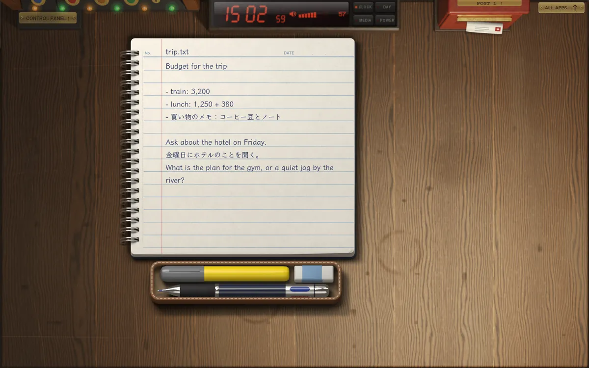
DEsk's own notepad is the top page of a wire-bound notebook. Type on it, or write with a pen in one of the pencil case's four inks. Pages turn whole, and it shuts when you slide it to the edge.
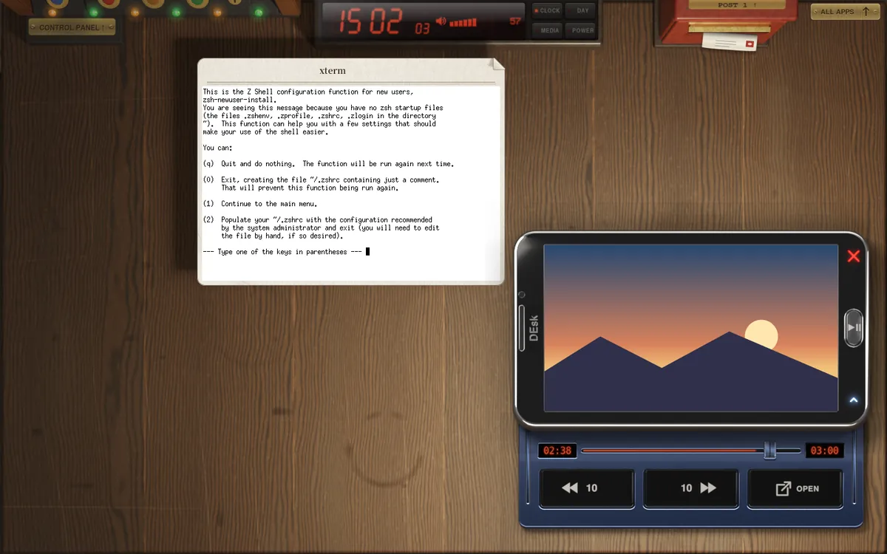
A video in its own small window becomes the screen of an old slider phone, kept in front. The home button plays and pauses; slide out its deck for the slider and ten seconds back or on.
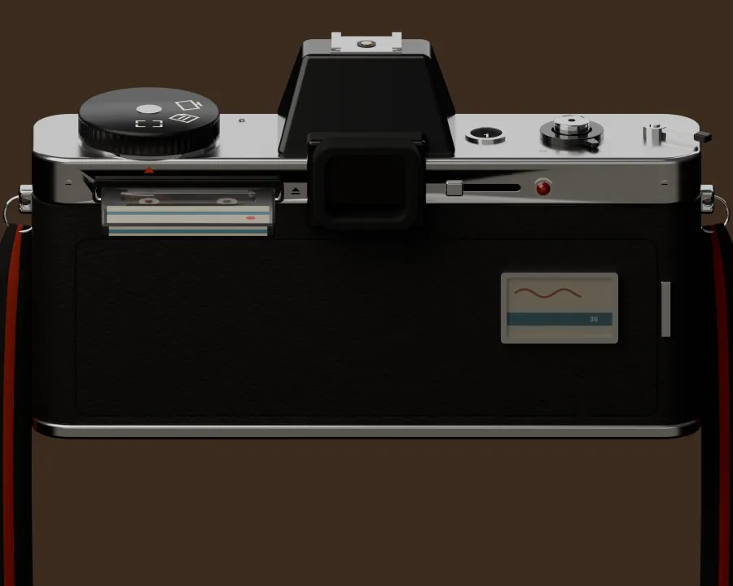
It comes up to your eye and holds the screen still. Drag out the picture you want and let go: a click, and a flash. Put a tape in, and the shutter makes a film.
The calculator
Take it from the drawer, or from ALL APPS, and it opens on the desk beside your windows. A dot display on the right, twenty-four deep keys, and in the lid a pad that writes down every sum.
The notebook
DEsk's own notepad is the top page of a wire-bound notebook, with its rings, its perforation and a navy cover. What you type is set in a handwriting face in navy ink, and on the same page you can write with a pen.
Picture-in-picture
Put a browser's video in its own small window and it turns into the screen of an old slider phone: black glass in a polished steel rim, lying at the corner of the desk and always in front.
Press Print and a camera comes up to your eye. The screen stops as it was the moment you pressed it, open menus and tooltips and all; the room darkens around the viewfinder, and the picture sits under thick glass.
New in 0.2
The Control Panel and the clock
We took it apart and built it again around what you reach for most. The everyday switches now sit on top, under your hand, as four big lit buttons anyone can press.
Both radios off at a press: the levers drop and the antenna comes down. Press again for both back on.
The machine's power-saving profile, on and off, lit green while it is on.
Warm colours on every screen, as strong as you like, kept until you turn them off.
Each press the next way of using your screens: extend, duplicate, this one, the other. Super+P does the same.
Each cap carries its sign, cut lightly into the glass, that glows from within when lit. No key needed: the four on the lid are for anyone.
Its PC page reads out the battery, the power drawn, the processor, the memory and the network, in the clock's own red figures.
The time, the day, what is playing, and the PC: tap the buttons beside the glass.
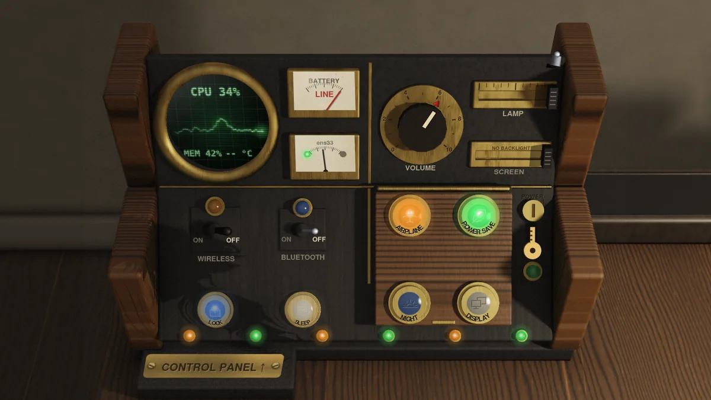
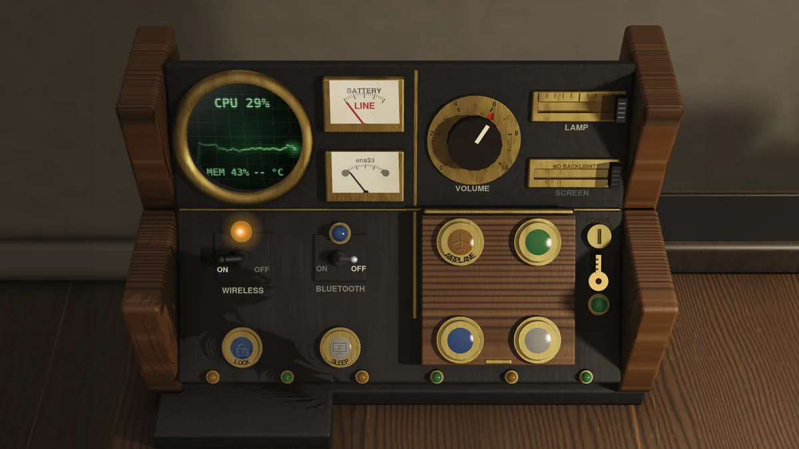
Your desk
The wood it is made of, what lies on it, and what the things in its drawer look like — chosen the way you would choose them for a real desk.
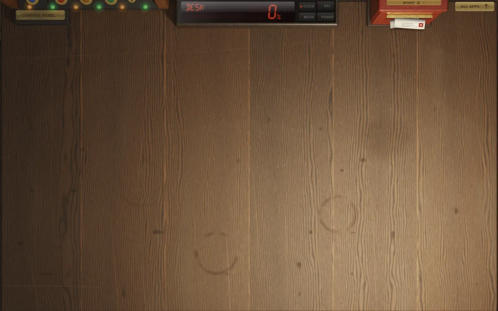
Walnut
Walnut as it has always been, oak, cherry, maple or ebony — or a top of green leather tooled in gold, or of linoleum, let into a walnut rim. Over the wood, a stain if you like: honey, brown, dark brown or a grey wash, with the grain showing through.
Each picture is the desk as DEsk traces it on the GPU.
Material
What the desk is made of is an order form in Shell Settings, not a list of themes. Tick a wood and a colour from the fans of samples, sign at the foot, and the desk is made again in it.
The mat
Lay a clear mat over the whole desk and slip your photos under it, as under the glass on an office desk.
The mat began with DaeTheDruid's PR #61: felt in a colour, or a photo printed on it.
Looks
Windows stay paper. But each program you keep in the drawer can look like the thing you would keep there.
Fingers and a pen
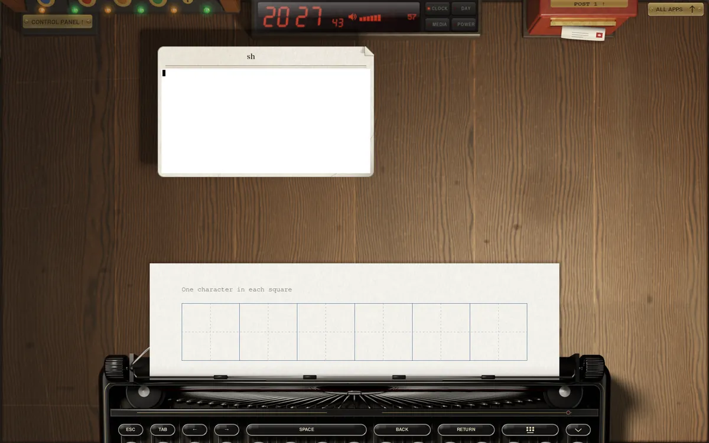
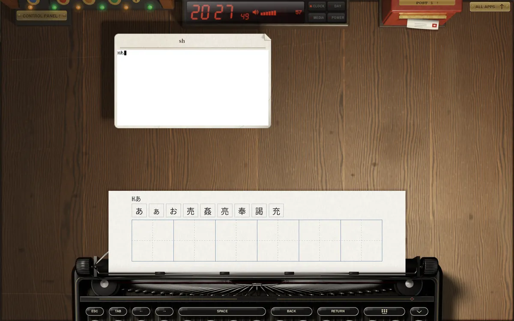
Touch, one to one. On a touch screen the drawer, the bookcase and every sheet follow your fingers. Let go mid-flick and a sheet slides to a stop on the wood. Three fingers take a whole window.
A typewriter for a keyboard. With no keyboard to hand, touch where you would type and a typewriter rises at the front of the desk: glass keys rimmed in nickel, the ribbon and the bell, its keys printed from your own layout.
A pen. Apps that know a pen get its pressure and tilt, and the hand holding it is not taken for a finger.
It turns with the machine. Hold a tablet upright and the desk turns with it; the windows on it are laid back onto the screen.
Handwriting. Write in the squares on the typewriter's sheet, and what you wrote is read and typed — English, Japanese, Chinese or Korean, on the machine alone.
Nothing jumps to its place. What you touch comes with your finger, one to one, and when you let go it carries on at the speed you gave it.
And more: left to the post box, three fingers apart to open a sheet out, three fingers in to crumple it and throw it away, three fingers up for every window at once.
Windows
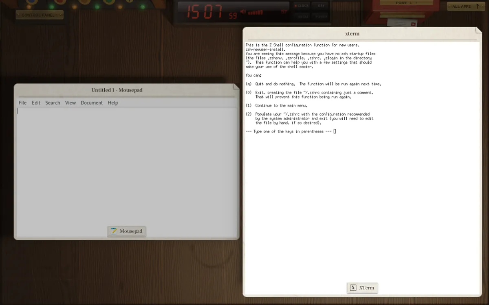
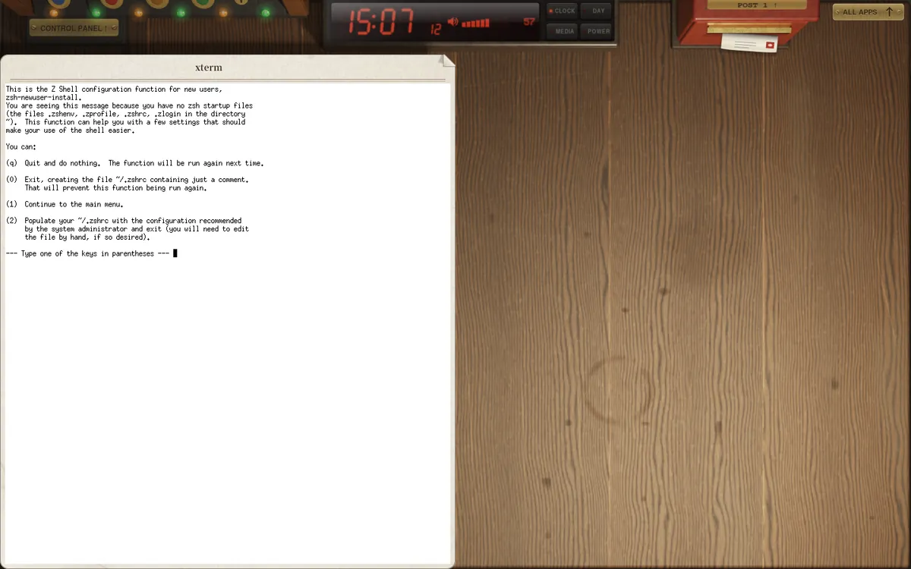
Favourites
At the left end of the row leans a slim binder of mustard cloth, a red star stamped on its label. In it are the programs you flag, and nothing else.
Clipboard
In the drawer, by the calculator, is a clipboard of brown hardboard with a steel clip. Everything you copy is clipped on as a slip of paper, the newest in front.
Hold Alt and every window, folded ones too, slides apart over the desk, each labelled with its program's icon and name. A quick Alt+Tab goes back to the one before.
Super+Left or Super+Right lays a window on half the screen — or let go of it at the screen's edge.
A window down at the front covers the handle. Click its bottom edge and it lifts, so the drawer can open.
A Steam game is folded with its own name and icon, not just its file's.
A menu that would run off the edge is moved back onto it.
A game or a remote desktop that asks gets Super and the other keys. Super+Esc takes them back.
Turn on the termites, and a desk left alone a while gets nibbled — the wood and the edges of windows. Only a picture, and off unless you turn it on.
Lighter
Pictures where the room stands still. The clock, the post box and the Control Panel are rendered in Blender, shadows and all. With no GPU, the room is laid from pictures of each surface, and only what they can't show is traced.
Sharp while it moves. At Medium and up, the walk to the front door is filmed ahead: the name on its board can be read all the way, and the door is sharp the moment you stop.
The times are from a machine cut down to about 2010, at Low.
Thanks
Half screens, the drawer's handle, Alt+Tab, Steam's names, the camera and the termites came from the AiO collection by barenakedchicken (dentarthurdent on Discord), and the camera from Ash's region screenshot too. The desk mat began with DaeTheDruid.
And thank you to everyone who reported, tested and asked, on GitHub and on Discord.
Thank you!
It is being tried on real machines now. Until it comes, DEsk 0.1.5 is the one to install — and 0.2 will carry your settings forward.